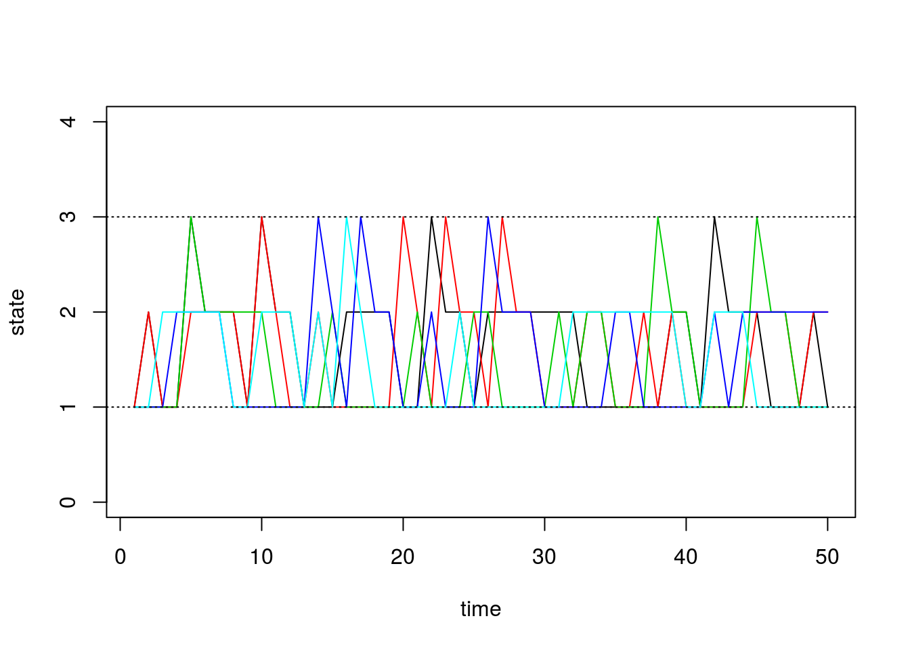

Simulating Discrete Markov Chains: An Introduction
Matt Bonakdarpour
2016-01-21
Last updated: 2017-03-06
Code version: c7339fc
Pre-requisites
This document assumes basic familiarity with Markov chains.
Illustrative Example
In this note, we will describe a simple algorithm for simulating Markov chains. We first settle on notation and describe the algorithm in words.
Let \(P_{ij}\) denote the one-step transition probability. That is, \[ P_{ij} = P(X_{t+1} = j | X_{t} = i)\]
In what follows, we will assume that the transition probabilities do not depend on time \(t\). These are called time homogenous Markov chains.
The general idea of simulating discrete Markov chains can be illustrated through a simple example with 2 states. Assume our state space is \(\{1,2\}\) and the transition matrix is:
\[P = \begin{bmatrix} 0.7 & 0.3 \\ 0.4 & 0.6 \end{bmatrix}\]
We denote the \((i,j)\)-th entry of the matrix \(P\) as \(P_{ij}\).
Now assume that our Markov chain starts in state 1 so that \(X_0 = 1\). Since we are starting in state 1, our transition probabilities are defined by the first row of \(P\). Our chain can either remain in state \(1\) with probability \(P_{11}\) or transition to state \(2\) with probability \(P_{12}\). Therefore, to simulate \(X_1\), we must generate a random variable according to the probabilities \(P_{11}= P(X_1 = 1 | X_0 = 1) = 0.7\) and \(P_{12} = P(X_1 = 2 | X_0 = 0) = 0.3\).
In general, we can generate any discrete random variable according to a set of probabilities \(p = \{p_1, \ldots, p_K\}\) with Inverse Transform Sampling. Also note that this is equivalent to taking a single draw from a multinomial distribution with probability vector \(p\) – we use this method in the algorithm below.
General Algorithm
Here we present a general algorithm for simulating a discrete Markov chain assuming we have \(S\) possible states.
- Obtain the \(S\times S\) probability transition matrix \(P\)
- Set \(t = 0\)
- Pick an initial state \(X_t=i\).
- For t = 1…T:
- Obtain the row of \(P\) corresponding to the current state \(X_t\).
- Generate \(X_{t+1}\) from a multinomial distribution with probability vector equal to the row we obtained above.
We implement this in the following function, initializing the first state to \(1\):
# simulate discrete Markov chains according to transition matrix P
run.mc.sim <- function( P, num.iters = 50 ) {
# number of possible states
num.states <- nrow(P)
# stores the states X_t through time
states <- numeric(num.iters)
# initialize variable for first state
states[1] <- 1
for(t in 2:num.iters) {
# probability vector to simulate next state X_{t+1}
p <- P[states[t-1], ]
## draw from multinomial and determine state
states[t] <- which(rmultinom(1, 1, p) == 1)
}
return(states)
}Simulation 1: 3x3 example
Assume our probability transition matrix is: \[P = \begin{bmatrix} 0.7 & 0.2 & 0.1 \\ 0.4 & 0.6 & 0 \\ 0 & 1 & 0 \end{bmatrix}\]
We initialize this matrix in R below:
# setup transition matrix
P <- t(matrix(c( 0.7, 0.2, 0.1,
0.4, 0.6, 0,
0, 1, 0 ), nrow=3, ncol=3))Now we will use the function we wrote in the previous section to run several chains and plot the results:
num.chains <- 5
num.iterations <- 50
# each column stores the sequence of states for a single chains
chain.states <- matrix(NA, ncol=num.chains, nrow=num.iterations)
# simulate chains
for(c in seq_len(num.chains)){
chain.states[,c] <- run.mc.sim(P)
}Our function returns a vector that contains the states of our simulated chain through time. Recall that our state space is \(\{1,2,3\}\). Below, we visualize how these chains evolve through time:
matplot(chain.states, type='l', lty=1, col=1:5, ylim=c(0,4), ylab='state', xlab='time')
abline(h=1, lty=3)
abline(h=3, lty=3)
Simulation 2: 8x8 example
Next we will do a larger experiment with the size of our state space equal to 8. Assume our probability transition matrix is: \[P = \begin{bmatrix} 0.33 & 0.66 & 0 & 0 & 0 & 0 & 0 & 0 \\ 0.33 & 0.33 & 0.33 & 0 & 0 & 0 & 0 & 0 \\ 0 & 0.33 & 0.33 & 0.33 & 0 & 0 & 0 & 0 \\ 0 & 0 & 0.33 & 0.33 & 0.33 & 0 & 0 & 0 \\ 0 & 0 & 0 & 0.33 & 0.33 & 0.33 & 0 & 0 \\ 0 & 0 & 0 & 0 & 0.33 & 0.33 & 0.33 & 0 \\ 0 & 0 & 0 & 0 & 0 & 0.33 & 0.33 & 0.33 \\ 0 & 0 & 0 & 0 & 0 & 0 & 0.66 & 0.33 \\ \end{bmatrix}\]
We first initialize our transition matrix in R:
P <- t(matrix(c( 1/3, 2/3, 0, 0, 0, 0, 0, 0,
1/3, 1/3, 1/3, 0, 0, 0, 0, 0,
0, 1/3, 1/3, 1/3, 0, 0, 0, 0,
0, 0, 1/3, 1/3, 1/3, 0, 0, 0,
0, 0, 0, 1/3, 1/3, 1/3, 0, 0,
0, 0, 0, 0, 1/3, 1/3, 1/3, 0,
0, 0, 0, 0, 0, 1/3, 1/3, 1/3,
0, 0, 0, 0, 0, 0, 2/3, 1/3), nrow=8, ncol=8))After briefly studying this matrix, we can see that for states 2 through 7, this transition matrix forces the chain to either stay in the current state or move one state up or down, all with equal probability. For the edge cases, states 1 and 8, the chain can either stay or reflect towards the middle states.
Now we run our simulations with the transition matrix above:
num.chains <- 5
num.iterations <- 50
chain.states <- matrix(NA, ncol=num.chains, nrow=num.iterations)
for(c in seq_len(num.chains)){
chain.states[,c] <- run.mc.sim(P)
}And finally we plot the chains through time below:
matplot(chain.states, type='l', lty=1, col=1:5, ylim=c(0,9), ylab='state', xlab='time')
abline(h=1, lty=3)
abline(h=8, lty=3)
Session information
sessionInfo()R version 3.3.2 (2016-10-31)
Platform: x86_64-pc-linux-gnu (64-bit)
Running under: Ubuntu 14.04.5 LTS
locale:
[1] LC_CTYPE=en_US.UTF-8 LC_NUMERIC=C
[3] LC_TIME=en_US.UTF-8 LC_COLLATE=en_US.UTF-8
[5] LC_MONETARY=en_US.UTF-8 LC_MESSAGES=en_US.UTF-8
[7] LC_PAPER=en_US.UTF-8 LC_NAME=C
[9] LC_ADDRESS=C LC_TELEPHONE=C
[11] LC_MEASUREMENT=en_US.UTF-8 LC_IDENTIFICATION=C
attached base packages:
[1] stats graphics grDevices utils datasets methods base
other attached packages:
[1] knitr_1.15.1 MASS_7.3-45 expm_0.999-0
[4] Matrix_1.2-8 workflowr_0.4.0 rmarkdown_1.3.9004
loaded via a namespace (and not attached):
[1] Rcpp_0.12.9 lattice_0.20-34 gtools_3.5.0 digest_0.6.12
[5] rprojroot_1.2 mime_0.5 R6_2.2.0 grid_3.3.2
[9] xtable_1.8-2 backports_1.0.5 git2r_0.18.0 magrittr_1.5
[13] evaluate_0.10 stringi_1.1.2 tools_3.3.2 stringr_1.2.0
[17] shiny_1.0.0 httpuv_1.3.3 yaml_2.1.14 htmltools_0.3.5This site was created with R Markdown